<style> .reveal section img { background:none; border:none; box-shadow:none; } #left { margin: 10px 0 15px 20px; text-align: center; float: left; z-index:-10; width:48%; font-size: 0.85em; line-height: 1.5; } #right { margin: 10px 0 15px 0; float: right; text-align: center; z-index:-10; width:48%; font-size: 0.85em; line-height: 1.5; } </style> # Unidad 6: Electrónica Digital <span style="font-size: 20.0pt; "> **Profesor:** Ing. Israel Chaves Arbaiza </span> <span style="font-size: 20.0pt;"> **Curso**: Electrónica Básica para Ing. Mecánica </span> <img align="left" width="300" height="300" src="media/logo-ucr.png"> <img align="right" width="300" height="180" src="media/logoEIM.png"> --- ## Agenda <span style="font-size: 22.0pt; "> * Definiciones * Ventajas y desventajas * Tabla de verdad * Función binaria * Sistemas numéricos * Otros códigos * Método de paridad </span> --- ## Electrónica Digital <span style="font-size: 22.0pt; "> 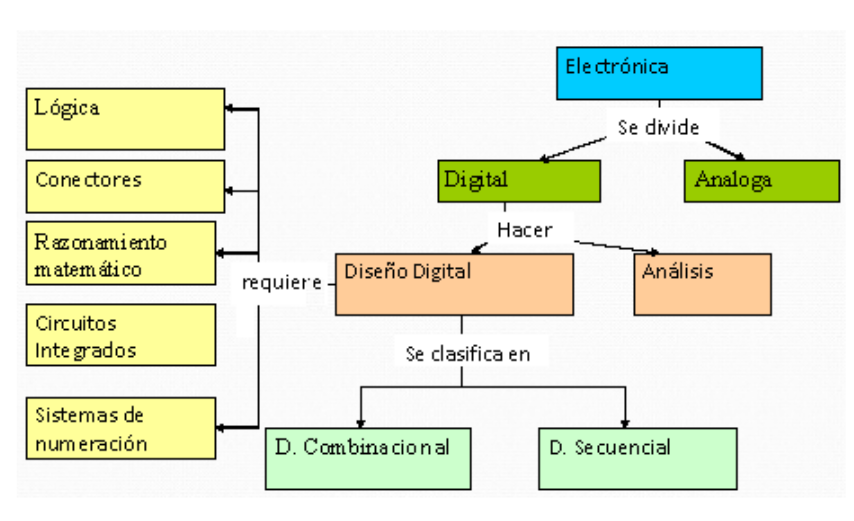 </span> --- ## Electrónica Digital <span style="font-size: 20.0pt; "> Un **sistema digital** es una combinación de dispositivos que manipula y procesa cantidades físicas ó información, **representada en forma discreta** </span> --- ## Electrónica Digital <span style="font-size: 20.0pt; "> **Representación Analógica** es una cantidad denotada por otra que es proporcional a ella, es decir, **análoga** a ésta. 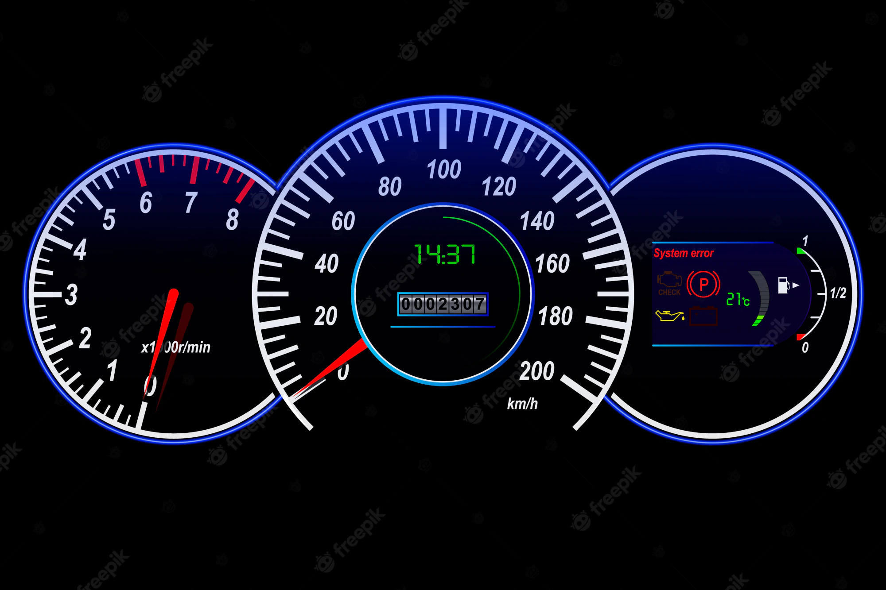 </span> --- ## Electrónica Digital <span style="font-size: 20.0pt; "> **Representación Digital** es cuando la información se representa mediante símbolos, normalmente números y el proceso se realiza en forma discreta, en lugar de continua en el tiempo 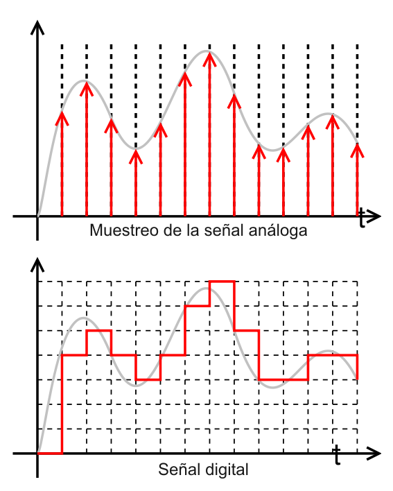 </span> --- ## Electrónica Digital <span style="font-size: 22.0pt; "> 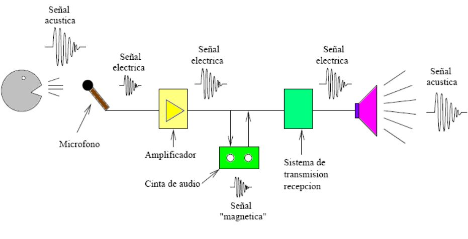 </span> --- ## Electrónica Digital <span style="font-size: 22.0pt; "> 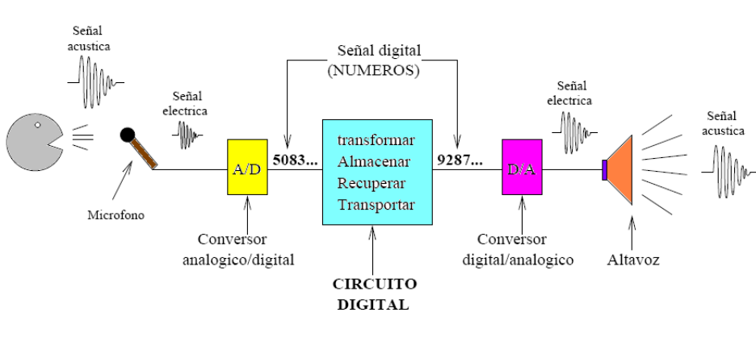 </span> --- ## Ejercicio <span style="font-size: 20.0pt; "> **¿Cuáles cantidades son analógicas y cuáles son digitales?** * Código Morse * Temperatura * Granos de arena en la playa * Control de volumen de un radio * Sintonizador de televisión * Altitud de vuelo de un avión * Presión en la llanta de un auto * La cantidad de átomos en un material </span> --- ## Ventajas de un sistema digital <span style="font-size: 20.0pt; "> * Ante la atenuación, se puede amplificar y reconstruir la señal al mismo tiempo; gracias a los sistemas de regeneración * Cuenta con sistemas de detección y corrección de errores, en la recepción * Facilidad de procesamiento de la señal * Las señales digitales se ven menos afectadas a causa del ruido ambiental, en comparación con las analógicas </span> --- ## Desventajas de un sistema digital <span style="font-size: 20.0pt; "> * Se necesita una conversión analógico-digital, antes y después del procesamiento * Requiere una sincronización precisa entre tiempos del transmisor, con respecto a los del receptor * Ocupa un mayor ancho de banda, que la señal analógica, para transmitirse * Al transformar una señal analógica a digital, siempre existirá un margen de error </span> --- ## Definiciones de lógica digital <span style="font-size: 20.0pt; "> * **Lógica:** Forma en que un circuito digital responde ante una entrada * **Circuito lógico:** Cada tipo de circuito que obedece a reglas lógicas * **Circuitos integrados digitales:** Son los *chips* que permiten implementar los circuitos lógicos </span> --- ## Definiciones de lógica digital <span style="font-size: 18.0pt; "> * Una **variable binaria** es una cantidad que puede ser igual a 0 ó a 1 </span> --- ## Función binaria <span style="font-size: 20.0pt; "> * Permite representar la relación entre la entrada y la salida de un circuito digital * Algebraicamente, se ve así: $$ F = [(A + BC')' + ABC]' + AB'C $$ </span> --- ## Tabla de verdad <span style="font-size: 18.0pt; "> 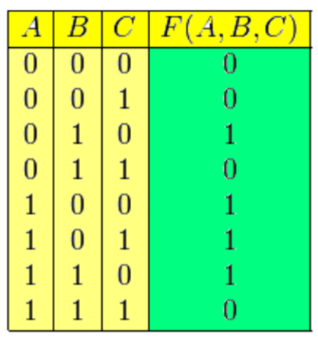 </span> --- ## Valores de voltaje binarios <span style="font-size: 18.0pt; "> 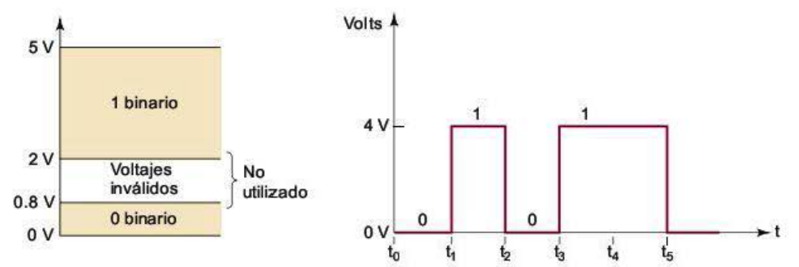 </span> --- ## Sistemas Numéricos Digitales <span style="font-size: 20.0pt; "> En la tecnología digital se utilizan muchos sistemas numéricos. Los más comunes son: * Decimal (el más utilizado) * Binario * Octal * Hexadecimal </span> --- ## Sistema decimal <span style="font-size: 20.0pt; "> 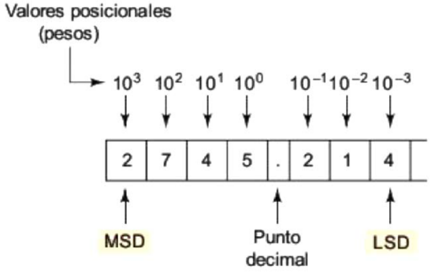 </span> --- ## Sistema Binario <span style="font-size: 20.0pt; "> * Para facilitar el diseño de equipos electrónicos que operen con sólo dos niveles de voltaje (activado ó desactivado) * Sólo hay 2 símbolos: 0 y 1 * Aún así, cualquier cantidad se puede representar en el sistema binario, el detalle es que requiere un mayor número de dígitos $$ 1011_{2} = (1x2^{3}) + (0x2^{2}) + (1x2^{1}) + (1x2^{0}) = 11_{10} $$ </span> --- ## Sistema Binario <span style="font-size: 18.0pt; "> Según la cantidad de dígitos utilizados, así la cantidad de conteos que se pueden realizar. Es decir, con $N$ bits ó dígitos, podemos realizar $2^{N} - 1$ conteos. Por ejemplo, si se utilizan 4 bits, el último número será: $$ 1111_{2} = 2^{4} - 1 = 15_{10} $$ </span> --- ## Conteo binario <span style="font-size: 20.0pt; "> 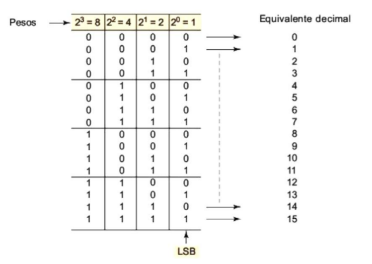 </span> --- ## Ejercicios <span style="font-size: 20.0pt; "> * ¿Cuál es el equivalente decimal de $1101011_{2}$ ? * ¿Cuál es el binario que sigue al $10111_{2}$ en la secuencia de conteo? * ¿Cuál es el mayor valor decimal que se puede representar si se utilizan 12 bits? </span> --- ## Sistema Octal <span style="font-size: 20.0pt; "> * Utiliza los dígitos del 0 al 7. * En informática, se utiliza para saber el ancho de banda de algún bus ó periférico, es decir, para saber cuánta información se puede enviar a través de un dispositivo. * Tiene la ventaja de no requerir dígitos distintos a los números. * Sin embargo, para trabajar con bytes (grupo de 8 bits) ó grupos de bytes, suele ser más cómodo el hexadecimal. </span> --- ## Conversión decimal a octal y octal a decimal <span style="font-size: 20.0pt; "> **Decimal a octal** $$ 125_{10} = 8^{2} * 1 + 61 $$ $$ 61_{10} = 8^{1} * 7 + 5 $$ $$ 5_{10} = 8^{0} * 5 + 0 $$ **Octal a decimal** $$ 764_{8} = 7 * 8^{2} + 6 * 8^{1} + 4 * 8^{0} = 448 + 48 + 4 = 500_{10} $$ </span> --- ## Conversión octal a binaria <span style="font-size: 20.0pt; "> $$ 51_{8} = $$ $$ 5_{8} = 101_{2} $$ $$ 1_{8} = 001_{2} $$ $$ 51_{8} = 101 001_{2} $$ </span> --- ## Conversión binario a octal <span style="font-size: 20.0pt; "> $$ 1010111100_{2} = 1274_{8} $$ | 001 | 010 | 111 | 100 | |-- |--- |--- |--- | | 1 | 2 | 7 | 4 | </span> --- ## Sistema Hexadecimal <span style="font-size: 20.0pt; "> * Se trabaja en base 16 (del 0 al 15) * Utiliza los dígitos del 0 al 9, y las letras A, B, C, D, E y F como los valores del 10 al 15 </span> --- ## Sistema Hexadecimal <span style="font-size: 20.0pt; "> 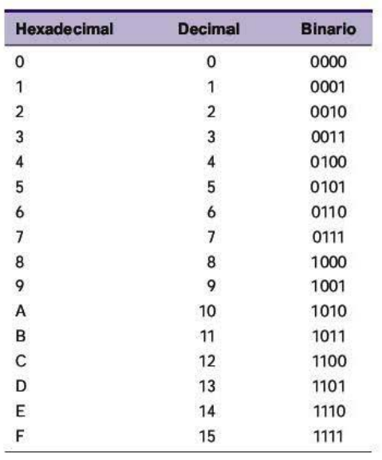 </span> --- ## Conversión decimal a hexadecimal y hexadecimal a decimal <span style="font-size: 20.0pt; "> Por ejemplo, para convertir $423_{10}$ 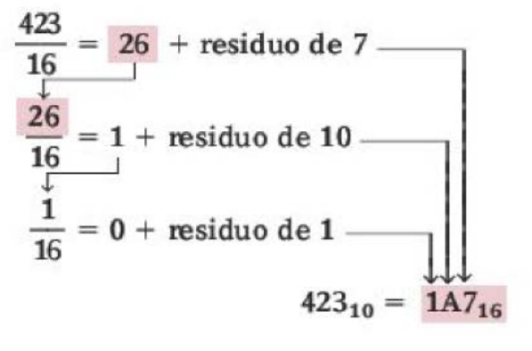 </span> --- ## Conversión hexadecimal a decimal <span style="font-size: 20.0pt; "> Por ejemplo, para convertir $9F2_{16}$ a base 10 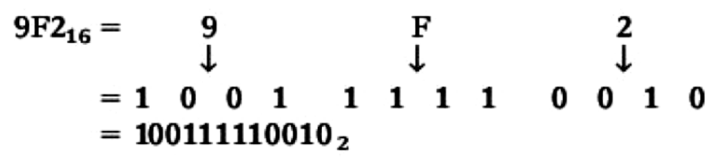 </span> --- ## Método de paridad para la detección de errores <span style="font-size: 20.0pt; "> * La operación más frecuente con sistemas digitales es el movimiento de datos binarios y códigos de un lugar a otro * La transmisión de voz digitalizada a través de un enlace de microondas * El almacenamiento de datos y la recuperación de los mismos * La transmisión de datos digitales desde una computadora hacia otra, utilizando internet </span> --- ## Método de paridad para la detección de errores <span style="font-size: 20.0pt; "> * Siempre que se transmite información desde un dispositivo (**transmisor**) hacia otro (**receptor**), existe la posibilidad de que ocurran errores. * La principal causa de errores es el ruido eléctrico, fluctuaciones de voltaje y/o corriente. * En ocasiones, ese ruido es tan grande, que el receptor lo detecta como un 1 lógico, y se altera la información recibida 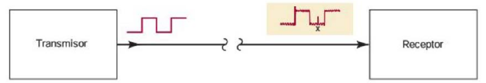 </span> --- ## Método de paridad para la detección de errores <span style="font-size: 20.0pt; "> * Para resolver este problema, se agrega un bit llamado **bit de paridad** * Este bit se hace 0 ó 1, dependiendo de la cantidad de 1's que contengan el grupo de bits del código 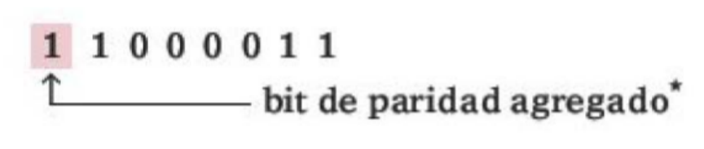 </span>